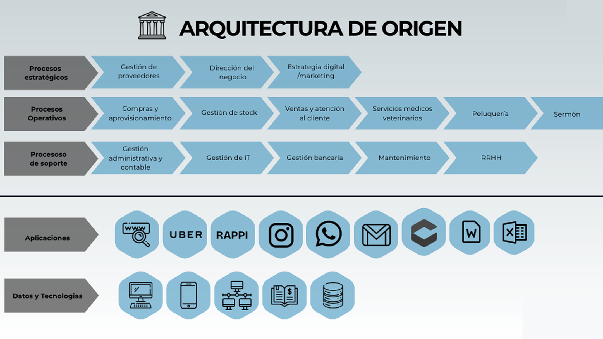
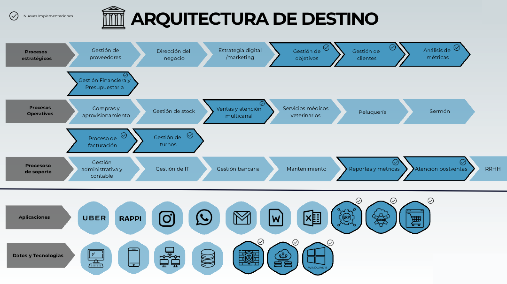

Arquitectura: Origen vs. Destino
Evolución desde la fragmentación hacia la integración total.
history Arquitectura de Origen (AS-IS)
Estado actual: Fragmentación y procesos manuales.
Datos Dispersos
Sin Backup Cloud

Puntos de Dolor:
La arquitectura actual depende de PCs locales aisladas. La información crítica del negocio viaja por canales informales (WhatsApp personal) o queda registrada en papel, imposibilitando la analítica de datos.
arrow_downward
rocket_launch Arquitectura de Destino (TO-BE)
Estado futuro: Ecosistema integrado en la nube.
100% Cloud
Omnicanalidad

Mejoras Clave:
Implementación de un núcleo digital (ERP+CRM) que centraliza toda la operación. Integración nativa con agenda web y pasarelas de pago, garantizando la integridad del dato y la seguridad de la información.